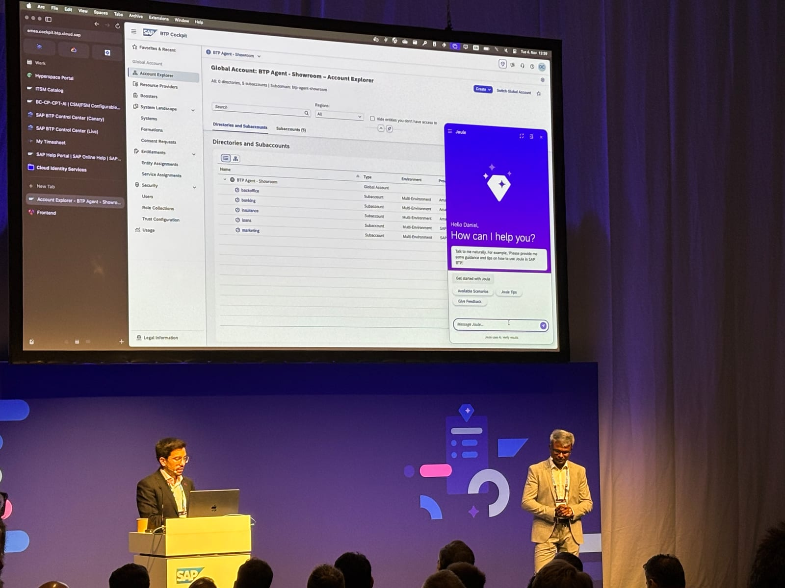
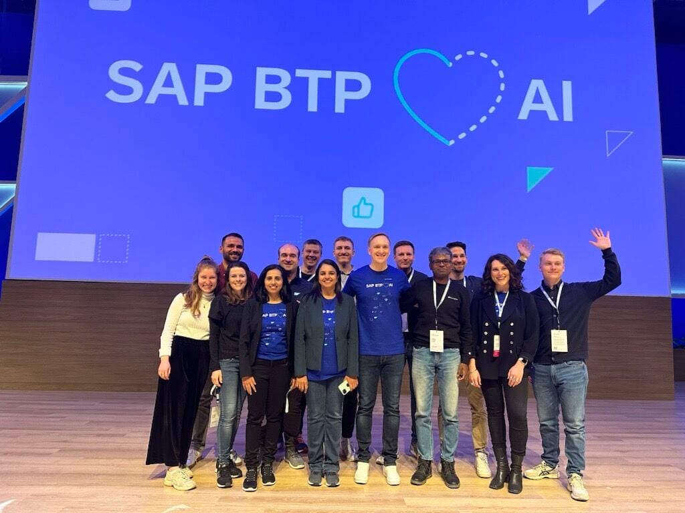
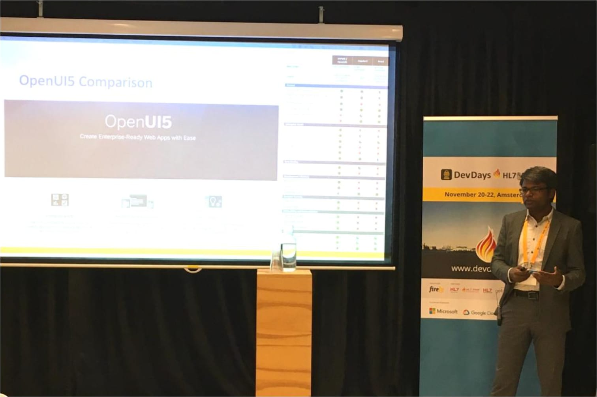
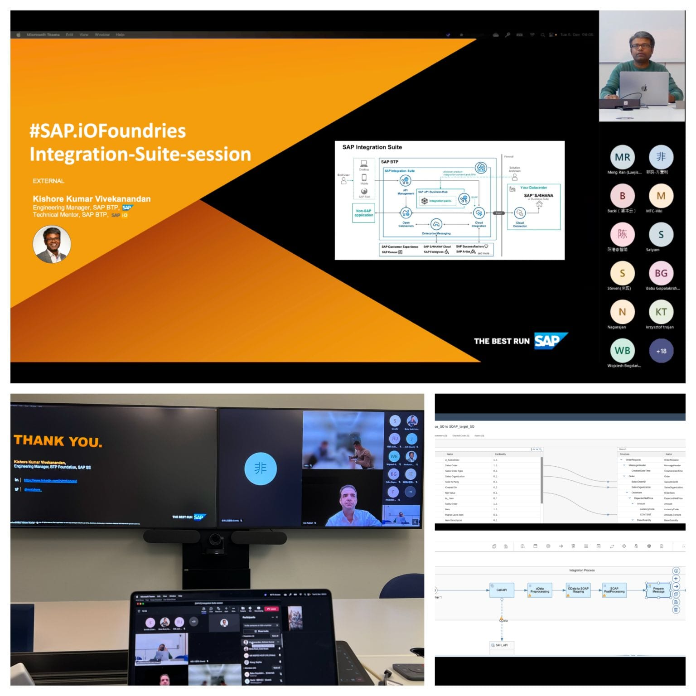
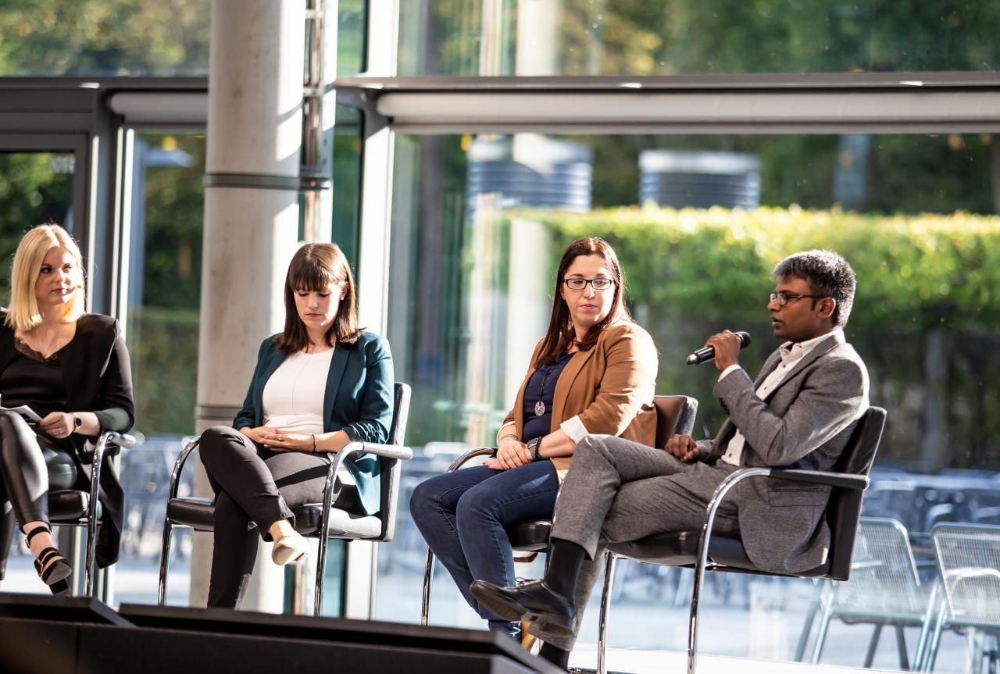
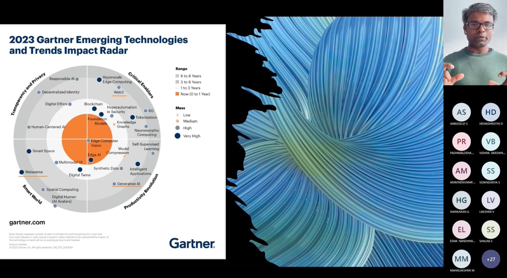

Gallery
Moments
On stage, on panels, in mentoring sessions — a few of the places this work has taken me.
-

SAP TechEd 2025 · Berlin
Deep-dive on BTP Agent with MCP & Knowledge Graph for BTP Administration.
-

SAP TechEd 2023
With the BTP × AI team, after contributing to the executive keynote.
-
SAP Usability Event · Sep 2025
The Role of AI in Platform Administration, with Daniel Campos Olivares.
-

DevDays 2019 · Amsterdam
Keynote on SAP OpenUI5 at the largest healthcare developer conference.
-

SAP.iO Foundries
Technical mentor session on the SAP Integration Suite for a global cohort.
-

Mentoring panel · SAP
On how mentorship inside SAP helps everyone build their career through mutual support.
-

University guest lecture
On emerging industry technology trends, framed around the Gartner radar.